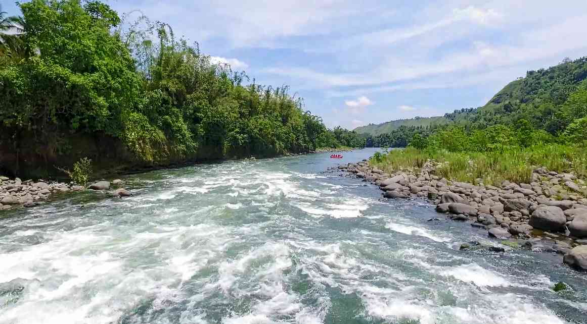

Most people land in Cagayan de Oro with a rafting booking and very little else planned. That is a shame, because the city gives back a lot more if you give it a couple of extra days. Within half an hour of the downtown streets you have a gorge with a sky bridge, a tribal heritage village, waterfalls, and hilltops where half the city comes out to watch the lights turn on. Then there is the food, which locals talk about with the same pride they reserve for the river.
CDO is the main city of Northern Mindanao. It has the malls, universities and hospitals of a regional capital, a compact old centre you can cover on foot, and road links to Bukidnon, Iligan and the ferry for Camiguin. Two to three days is a comfortable stay: one for the river, one for the city and its green edges, and one for a trip out.
This guide covers how to get in and around, the sights worth your time, the dishes to order, the restaurants and markets to eat them in, and a three-day plan that does not feel like a race.

Cagayan de Oro at a Glance
CDO quick facts
- Nicknames: the City of Golden Friendship, and the white-water rafting capital of the Philippines
- Airport: Laguindingan (CGY), about 43 to 46 km west of the city
- Ideal stay: 2 to 3 days
- Driest months: December to May
- Dish to order first: sinuglaw
- Edible souvenir: a box of pastel
Getting In and Moving Around
There are no direct international flights, so travellers from abroad connect through Manila, Cebu or Davao. The airport sits well outside the city, and traffic decides whether the ride takes under an hour or closer to an hour and a half.
- Airport to cityShuttle vans such as Magnum Express, LAX and Super Shuttle charge about PHP 199 to PHP 250. Magnum Express uses Limketkai Mall as its city stop, with trips about every 30 minutes from 3:30 AM to 8 PM. A private taxi runs PHP 600 to PHP 1,000. Grab works, but cars can be scarce at the airport.
- By seaMacabalan Port is close to the centre. 2GO and Trans-Asia sail in from Manila and Cebu, and taxis, Grab, jeepneys and multicabs wait outside.
- By busRural Transit is the big operator. Agora terminal serves the east and south (Davao, Butuan, Surigao), and Bulua terminal serves the west (Iligan, Zamboanga).
- In the cityDowntown is walkable, and taxis, Grab, jeepneys and multicabs cover the rest. Mapawa and the rafting launch need a tour pickup or a hired vehicle.
When to Go
December to May is the dry stretch, and it is the easier time for walking the centre, hiking at Mapawa and catching clear sunsets from the hills. June to October brings the rain. That is also when the river runs higher and the rapids get bigger, which some rafters actively want. Tours run all year, but a wet-season trip needs slack in the plan, and a rain jacket in the bag.
Old CDO on Foot
Start in the centre at Gaston Park, the city's historic plaza. It is shaded, quiet in the late afternoon, and right beside St. Augustine Metropolitan Cathedral, the city's main church. Between the two you get a sense of the colonial town that grew up along the river.
Museums are close by if the heat sends you indoors. Museo de Oro holds antiquities and regional heritage collections, and the Museum of Three Cultures looks at the different peoples and influences that shaped Mindanao. La Castilla Museum is another stop for local history. Opening days vary, so check before you walk over, especially on Mondays and holidays.
Green Escapes Close to the City
Gardens of Malasag Eco-Tourism Village
Up in Cugman, the Gardens of Malasag is part botanical garden and part living museum. Replica houses show how Mindanao's indigenous communities built and lived, with crafts on display and tribal performances held on a regular basis. It is an easy, low-effort morning and works well with children.
Macahambus Adventure Park
Macahambus is the one to pick if you only have time for a single nature stop. The gorge is the centrepiece, and the Sky Bridge hangs about 36 metres above the ground. There is a slide ride through the undergrowth, forest trails, and Macahambus Cave, a karst cave that was used as a hideout during the American colonial period.
Mapawa Nature Park
Mapawa covers a large stretch of land outside the centre, with waterfalls, viewpoints, horseback rides, hiking trails and waterfall rappelling. Budget half a day and go for the trails and the water, not only the photo spots. You will need a tour or your own ride to get there.
Waterfalls and Caves
F.S. Catanico Falls in Cugman is the nearest, roughly 30 minutes out, where the water drops through a jumble of boulders and rock shelves. Mintugsok and Sinulom Falls are further away and reached by forest trails. For caves, Kweba de Oro and Mambuaya Cave are the usual options. Wear shoes with grip, since the rocks around all of these stay slippery.
Sunset Views in Indahag
The Indahag hills above the city are where CDO goes to look at itself. Amaya View and High Ridge are the best-known parks up there, with views across the whole city, glass-bottom bridges, small animal enclosures, obstacle courses and, at some spots, paragliding. The air is cooler than downtown, and arriving an hour before sunset gives you the day view and the night view in one visit. Eden's Solace is another viewpoint in the uplands.
Just west of the city, in El Salvador City, the Archdiocesan Shrine of the Divine Mercy draws pilgrims to its giant statue and its wide view. It fits neatly into the drive back from the airport.
The River Day
Rafting is still the main reason most visitors come, and the Cagayan de Oro River makes it easy: city pickup, a ride up to the launch at Barangay Mambuaya, and a few hours of paddling through rapids. First-timers should book the Lower run, which takes about three hours on the water and closer to five once transfers and the safety briefing are added. The intermediate and upper sections carry bigger, more technical water and suit people who have rafted before.
Package prices typically fall between PHP 1,200 and PHP 3,500 per person depending on the run and on what is bundled, such as transport, photos and lunch. Pick an established, accredited outfitter. Our guide to white-water rafting in Cagayan de Oro breaks down each run, the departure times and the safety rules.
What to Eat in Cagayan de Oro
CDO cooking pulls from the Visayan kitchen, the Maranao table and the habits of settlers from all over the country. Grilled meat and vinegar-cured fish show up everywhere, often on the same plate.
Outside the restaurants, keep an eye out for lechon manok stands with chickens turning over charcoal, sticks of street barbecue, and sutukil places where you pick your seafood and have it grilled, cooked into soup or served raw as kinilaw.
Where to Eat in CDO
Cucina Higala
The name joins the Spanish word for kitchen with the Visayan word for friend, a nod to the city's nickname. The restaurant sits in an old-style house on Capistrano Street, with chandeliers and heavy wooden furniture, and the menu leans on Mindanao heritage cooking. Chicken piyaparan (a Maranao dish with toasted coconut), tiyula itum, beef randang and bamboo rice sit beside familiar sinigang and kare-kare. Most mains are around PHP 400 to PHP 700, plus a service charge. It opens daily from 11 AM to 10 PM and fills up at dinner, so reserve. Save room for the sizzling binaki.
Boy Zugba
Run by the people behind Bigby's, Boy Zugba takes Filipino street food and Visayan home cooking and dresses it up a little. Order the Sinuglaw de Cagayan, which pairs grilled pork belly with vinegar-cured tuna, then the sospa and the buko halo for dessert. Find it on Corrales Avenue (11 AM to 11 PM daily) and on the third level of Ayala Malls Centrio.
Bigby's Cafe and Restaurant
Bigby's opened in CDO in 1998 and has been a local favourite ever since, somewhere between casual and dressy, with portions meant for sharing. Chix Ahoy and the ribs are the usual orders. The Rosario Strip branch on Limketkai Drive is the original, with others at SM Uptown and Centrio.
Bugsay Seafood Restaurant
On the third level of SM CDO Downtown, Bugsay cooks from family seafood recipes. It is the place to try several kinds of kinilaw at once, sea urchin included, along with chicken barbecue and seaweed salad.
Markets, Night Stalls and Bakeries
For eating at street level, go to Cogon Market. Humbaan ni Sio-Sio there is known for its humba, and the stalls around it sell lechon manok, binaki and fresh produce. At night, the Divisoria Night Market is the place for grills, skewers and late snacks. Kagay-Anon Restaurant is a dependable lunch stop for traditional local cooking, and Missy Bon Bon covers pastries, pastel and breakfast.
Day Trips Out of the City
Bukidnon: One to two hours uphill, Dahilayan Adventure Park has an 840-metre dual zipline, a drop zone, a forest luge and ATV rides, with activity packages around PHP 1,000 to PHP 2,000. Pair it with a stop at the Del Monte pineapple plantation.
Iligan: About 1.5 to 2 hours west by bus from Bulua terminal, Iligan is the place for waterfalls, with Maria Cristina and Tinago the two big names.
Camiguin: A bus to Balingoan and a ferry across get you to White Island, the hot springs and the Sunken Cemetery. It can be done in a day, but it is a long one. A night or two is better, and our Camiguin weekend guide has the details.
Three Days in Cagayan de Oro
- Day 1River and old town
Morning pickup for the Lower rafting run, lunch with the tour or back in town, and a rest. Walk Gaston Park and the cathedral around 5 PM, then dinner at Boy Zugba or Cucina Higala.
- Day 2Culture and views
Gardens of Malasag early, a museum before lunch at Bigby's, then Macahambus or Mapawa in the afternoon. Watch the sunset from Amaya View or High Ridge and finish at the Divisoria Night Market.
- Day 3Out or slow
Leave at 7 AM for Dahilayan and the pineapple fields, or for Iligan's waterfalls. For a slower day, see Catanico Falls in the morning, buy your pastel and have a late lunch at Cucina Higala.
Before You Go
Good to know
- Book the river earlyWeekends and holidays fill first. Confirm which run you are on and what the price covers.
- Carry small cashMalls and sit-down restaurants take cards, but Cogon Market and Divisoria run on cash.
- Buy pastel lastIt tastes best fresh, so pick it up on your final day. Boxes are also sold at the airport.
- Choose your baseLimketkai and Centrio put you near malls and restaurants. Downtown keeps Gaston Park within walking distance. Rafting outfitters pick up from both.
- Use normal city senseStay on lit streets at night and use Grab or metered taxis. The City Tourism and Cultural Affairs Office can confirm current fees and access to the parks.
- Pack for waterLight clothes, strapped sandals or water shoes, a dry bag, and a rain jacket from June to October.
CDO has no beaches to sell you, and it does not need them. Spend a morning on the river, an afternoon on the gorge and the hills, and your evenings working through sinuglaw, humba and a few too many pastel. By the time you leave, the Golden Friendship nickname will make sense.

Comments
No comments yet. Been here recently? Share a tip or ask a question.
Leave a Reply